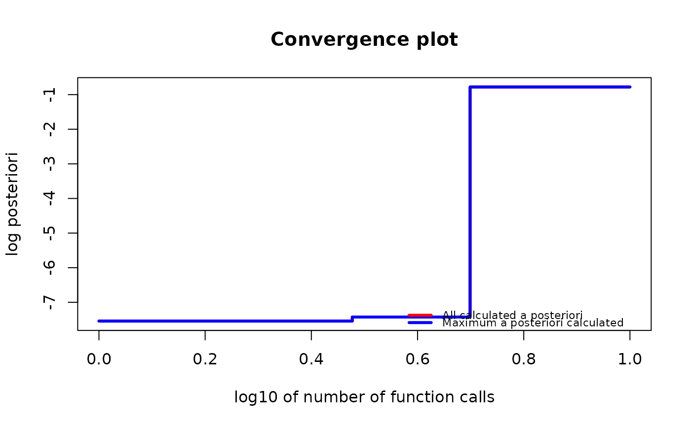

Use one of the optimization algorithms to find the permutation that maximizes a posteriori probability based on observed data. Not all optimization algorithms will always find the MAP, but they try to find a significant value. More information can be found in the "Possible algorithms to use as optimizers" section below.
Usage
find_MAP(
g,
max_iter = NA,
optimizer = NA,
show_progress_bar = TRUE,
save_all_perms = FALSE,
return_probabilities = FALSE
)Arguments
- g
Object of a
gipsclass.- max_iter
The number of iterations for an algorithm to perform. At least 2. For
optimizer = "BF", it is not used; foroptimizer = "MH", it has to be finite; foroptimizer = "HC", it can be infinite.- optimizer
The optimizer for the search of the maximum posteriori:
"BF"(the default for unoptimizedgwithperm size <= 9) - Brute Force;"MH"(the default for unoptimizedgwithperm size > 10) - Metropolis-Hastings;"HC"- Hill Climbing;"continue"(the default for optimizedg) - The same as thegwas optimized by (see Examples).
See the Possible algorithms to use as optimizers section below for more details.
- show_progress_bar
A boolean. Indicate whether or not to show the progress bar:
When
max_iteris infinite,show_progress_barhas to beFALSE;When
return_probabilities = TRUE, then shows an additional progress bar for the time when the probabilities are calculated.
- save_all_perms
A boolean.
TRUEindicates saving a list of all permutations visited during optimization. This can be useful sometimes but needs a lot more RAM.- return_probabilities
A boolean.
TRUEcan only be provided only whensave_all_perms = TRUE. For:optimizer = "MH"- use Metropolis-Hastings results to estimate posterior probabilities;optimizer = "BF"- use brute force results to calculate exact posterior probabilities.
These additional calculations are costly, so a second and third progress bar is shown (when
show_progress_bar = TRUE).To examine probabilities after optimization, call
get_probabilities_from_gips().
Details
find_MAP() can produce a warning when:
the optimizer "hill_climbing" gets to the end of its
max_iterwithout converging.the optimizer will find the permutation with smaller
n0thannumber_of_observations(for more information on what it means, see \(C_\sigma\) andn0section in thevignette("Theory", package = "gips")or in its pkgdown page).
Possible algorithms to use as optimizers
For an in-depth explanation, see in the
vignette("Optimizers", package = "gips") or in its
pkgdown page.
For every algorithm, there are some aliases available.
"brute_force","BF","full"- use the Brute Force algorithm that checks the whole permutation space of a given size. This algorithm will find the actual Maximum A Posteriori Estimation, but it is very computationally expensive for bigger spaces. We recommend Brute Force only forp <= 9. For the time the Brute Force takes on our machines, see in thevignette("Optimizers", package = "gips")or in its pkgdown page."Metropolis_Hastings","MH"- use the Metropolis-Hastings algorithm; see Wikipedia. The algorithm will draw a random transposition in every iteration and consider changing the current state (permutation). When themax_iteris reached, the algorithm will return the best permutation calculated as the MAP Estimator. This implements the Second approach from references, section 4.1.2. This algorithm used in this context is a special case of the Simulated Annealing the user may be more familiar with; see Wikipedia."hill_climbing","HC"- use the hill climbing algorithm; see Wikipedia. The algorithm will check all transpositions in every iteration and go to the one with the biggest a posteriori value. The optimization ends when all neighbors will have a smaller a posteriori value. If themax_iteris reached before the end, then the warning is shown, and it is recommended to continue the optimization on the output of thefind_MAP()withoptimizer = "continue"; see examples. Remember thatp*(p-1)/2transpositions will be checked in every iteration. For biggerp, this may be costly.
References
Piotr Graczyk, Hideyuki Ishi, Bartosz Kołodziejek, Hélène Massam. "Model selection in the space of Gaussian models invariant by symmetry." The Annals of Statistics, 50(3) 1747-1774 June 2022. arXiv link; doi:10.1214/22-AOS2174
See also
gips()- The constructor of agipsclass. Thegipsobject is used as thegparameter offind_MAP().plot.gips()- Practical plotting function for visualizing the optimization process.summary.gips()- Summarize the output of optimization.AIC.gips(),BIC.gips()- Get the Information Criterion of the found model.get_probabilities_from_gips()- Whenfind_MAP(return_probabilities = TRUE)was called, probabilities can be extracted with this function.log_posteriori_of_gips()- The function that the optimizers offind_MAP()tries to find the argmax of.forget_perms()- When thegipsobject was optimized withfind_MAP(save_all_perms = TRUE), it will be of considerable size in RAM.forget_perms()can make such an object lighter in memory by forgetting the permutations it visited.vignette("Optimizers", package = "gips")or its pkgdown page - A place to learn more about the available optimizers.vignette("Theory", package = "gips")or its pkgdown page - A place to learn more about the math behind thegipspackage.
Examples
require("MASS") # for mvrnorm()
perm_size <- 5
mu <- runif(perm_size, -10, 10) # Assume we don't know the mean
sigma_matrix <- matrix(
data = c(
1.0, 0.8, 0.6, 0.6, 0.8,
0.8, 1.0, 0.8, 0.6, 0.6,
0.6, 0.8, 1.0, 0.8, 0.6,
0.6, 0.6, 0.8, 1.0, 0.8,
0.8, 0.6, 0.6, 0.8, 1.0
),
nrow = perm_size, byrow = TRUE
) # sigma_matrix is a matrix invariant under permutation (1,2,3,4,5)
number_of_observations <- 13
Z <- MASS::mvrnorm(number_of_observations, mu = mu, Sigma = sigma_matrix)
S <- cov(Z) # Assume we have to estimate the mean
g <- gips(S, number_of_observations)
g_map <- find_MAP(g, max_iter = 5, show_progress_bar = FALSE, optimizer = "Metropolis_Hastings")
g_map
#> The permutation (1,2):
#> - was found after 5 posteriori calculations;
#> - is 2.337 times more likely than the () permutation.
g_map2 <- find_MAP(g_map, max_iter = 5, show_progress_bar = FALSE, optimizer = "continue")
if (require("graphics")) {
plot(g_map2, type = "both", logarithmic_x = TRUE)
}

g_map_BF <- find_MAP(g, show_progress_bar = FALSE, optimizer = "brute_force")
summary(g_map_BF)
#> The optimized `gips` object.
#>
#> Permutation:
#> (1,2,3,4,5)
#>
#> Log_posteriori:
#> -15.1521
#>
#> Times more likely than starting permutation:
#> 414.386
#>
#> The p-value of Likelihood-Ratio test:
#> 0.4883
#>
#> The number of observations:
#> 13
#>
#> The mean in the `S` matrix was estimated.
#> Therefore, one degree of freedom was lost.
#> There are 12 degrees of freedom left.
#>
#> n0:
#> 2
#>
#> The number of observations is bigger than n0 for this permutation,
#> so the gips model based on the found permutation does exist.
#>
#> The number of free parameters in the covariance matrix:
#> 3
#>
#> BIC:
#> 129.0236
#>
#> AIC:
#> 127.3288
#>
#> --------------------------------------------------------------------------------
#> Optimization algorithm:
#> brute_force
#>
#> The number of log_posteriori calls:
#> 67
#>
#> Optimization time:
#> 0.1128407 secs